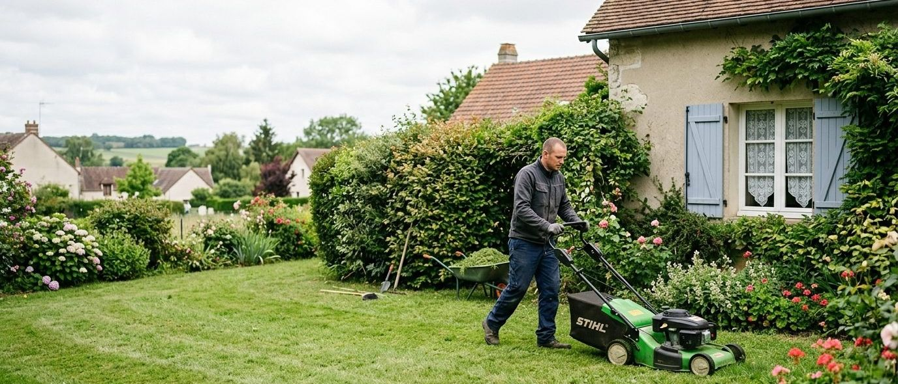

Contact · Tessancourt-sur-Aubette (78)
Parlons de votre projet
Décrivez votre besoin en quelques lignes : vous obtenez un message prêt à envoyer par SMS ou à copier.

Demande de devis
Parlez-nous de votre projet
Quelques lignes suffisent pour décrire votre jardin et votre besoin.
Votre demande est prête
Choisissez comment l'envoyer. Rien n'est transmis tant que vous n'avez pas validé l'envoi.